Favorite Spot
One of my favorite vacations spots to go to is Virginia Beach! My husband and I went for
the first time and we had an amazing time. What was amazing about the place is that there is only 3 miles
of biking right alongside the beach so you can get your exercise and enjoy the cool breeze. Alongside the bike
path is various events such as performers. There is a lot of restaurants right beside the beach too that you can just
walk into and be served immediately. I was surprised by how many individuals were outside biking, riding rentals, or watching
events that unfold here.
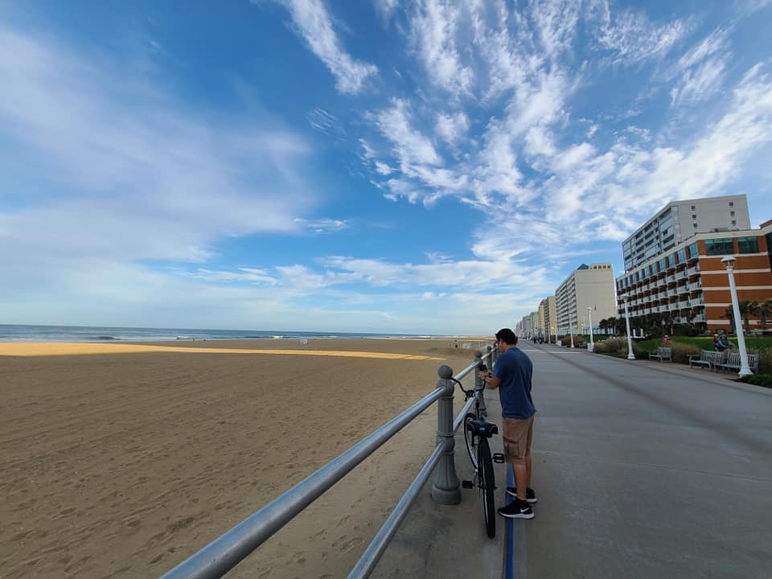
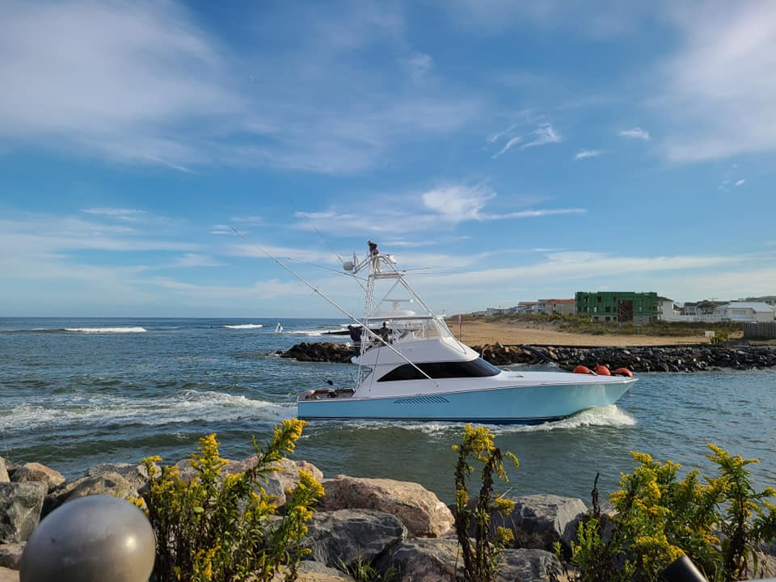
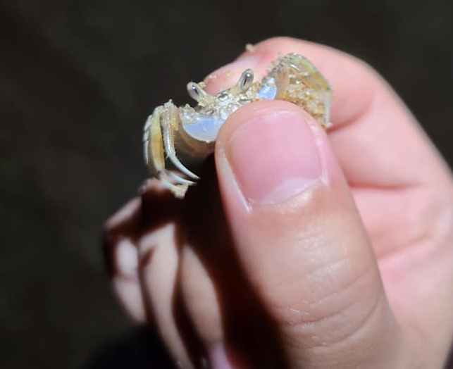
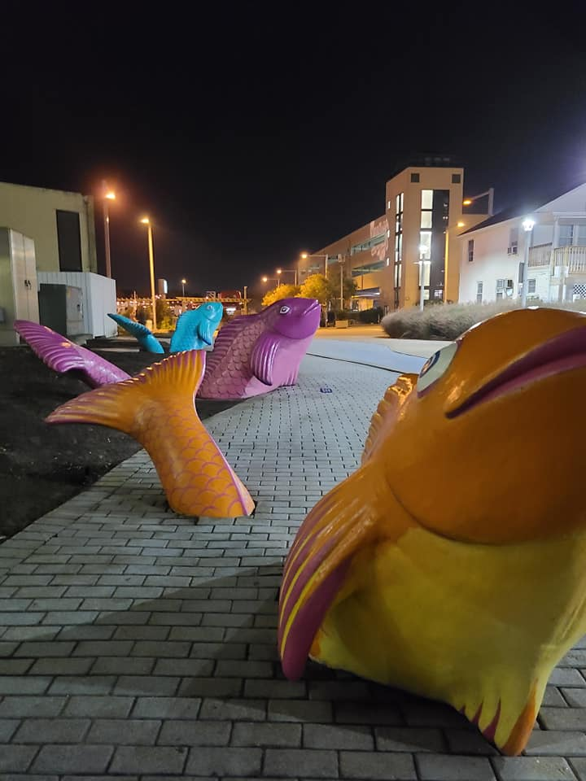
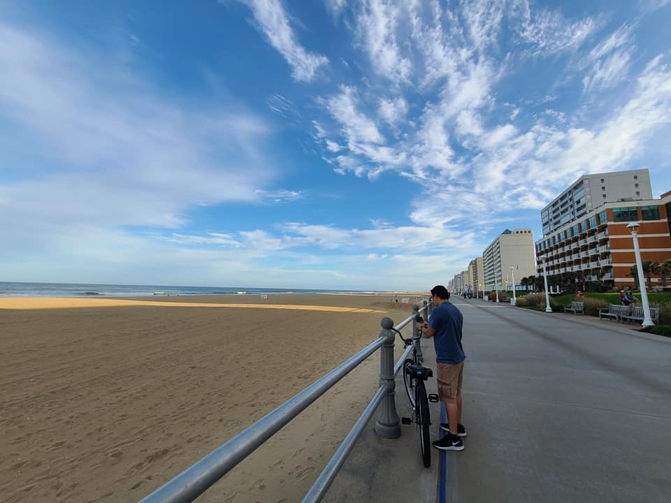
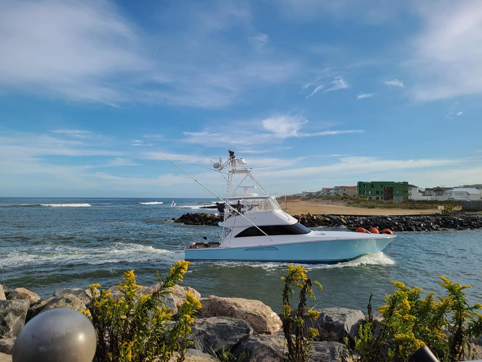
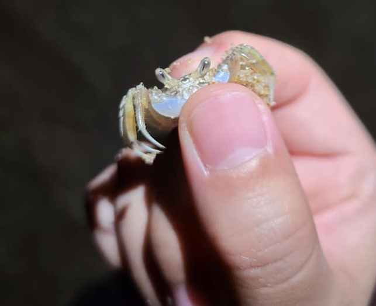
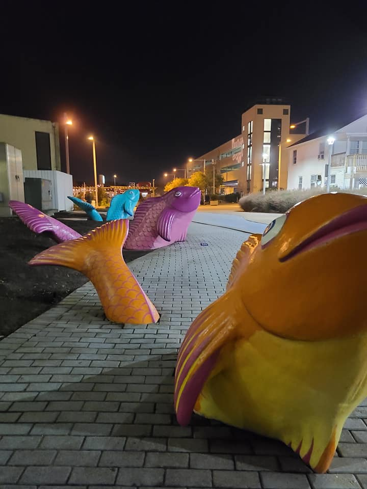
Favorite Restaurant
At Virginia beach, there are many seafood restaurants to choose from but if there is a place that wins an award,
that place is Watermans! They have many specials at night when you arrive and they will let you know what is on the menu too.
I was fascinated at how packed this place was as it has a reputation for being one of the most popular restaurants in the area. Luckily
the hotel I booked was right beside there so we were able to easily walk out of our hotel to this restaurant. I will say that service here
is amazing as they have over 8,000 reviews on Google.
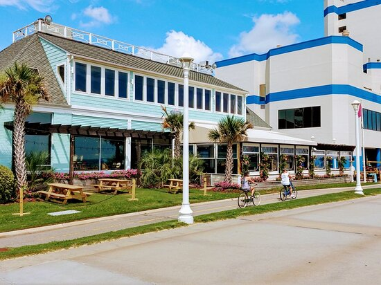

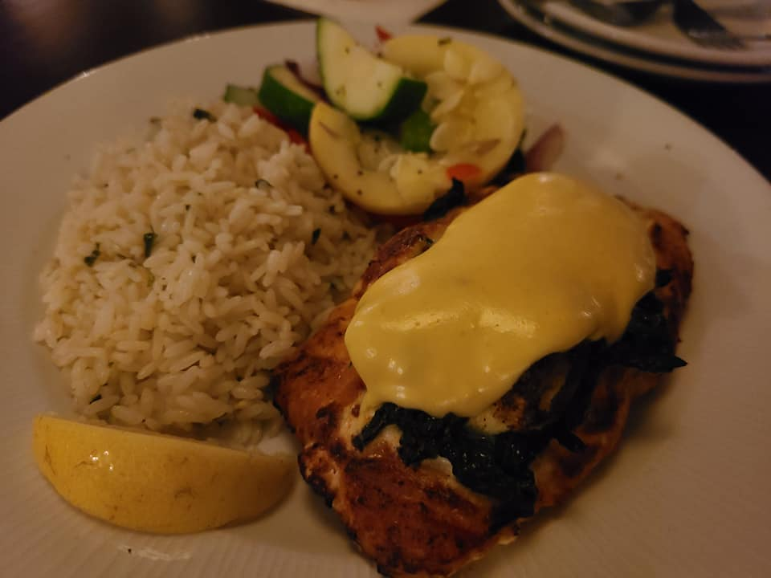
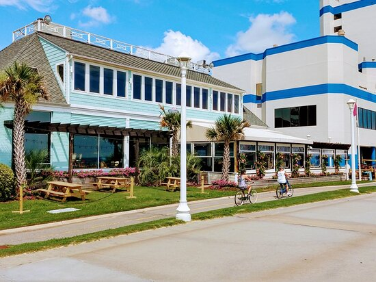
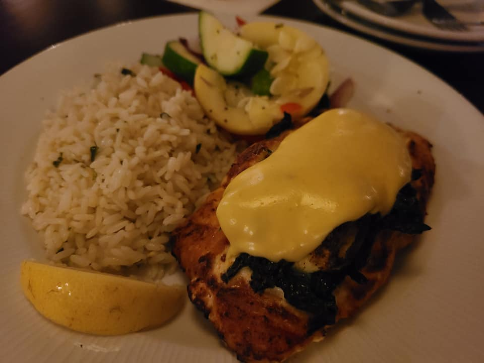